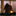

 SomaFM
//somafm.com/
SomaFM is a small radio station network. It provides its own unique channels. Which streamtuner2 shows in a static list.
SomaFM is a non-commercial and ad-free provider. It strongly depends on listener donations.
- 🔟 Bitrate configuration
-
It provides streaming links in different audio formats. Only AAC64 is guaranteed to be available for all. Other bitrates depend on the station.
After reconfiguring the bitrate/format, you can Reload the station list to update them. Otherwise refreshing has no effect.